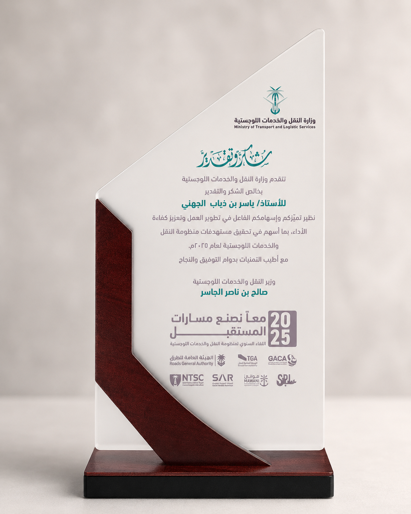

SENIOR PROJECT MANAGER
Yasir Aljuhani
PMP® | Infrastructure Delivery | Operations Excellence
Riyadh, Saudi Arabia
Results-driven project professional leading complex infrastructure and operations initiatives with strong control over planning, risk, stakeholders, reporting, and delivery governance.
RECOGNITION
Recognition & Leadership Moment
Recognized by the Ministry of Transport and Logistic Services for distinguished contribution, performance development, and strengthening work efficiency in support of the transport and logistics ecosystem.
Ministerial Recognition 2025SAR LeadershipInfrastructure DeliveryOperational Excellence

SELECTED PROJECT WORK
Operational systems, dashboards, and automation built around real railway workflows.
These examples show delivery beyond coordination: tools, reporting, and process automation designed to reduce manual effort and improve operational visibility without exposing sensitive operational data.

Desktop Automation
WON Hub — Railway Automation Suite
Modern desktop workflow for processing Weekly Operating Notice files, tracking activity stages, validating inputs, and generating controlled Word outputs.

Reporting Intelligence
S&T Project Intelligence Dashboard
Power BI dashboard for Notification of Works analysis by year, location, work type, system, duration, and proposed activity patterns.

Excel Automation
NOW Automation Workflow
Excel/VBA-based workflow supporting Notification of Works preparation, review, impact generation, document routing, and controlled next-step actions.
Secure Intelligence
Smart Location Brain — Internal Logic Layer
Rule-based matching and data quality logic developed to support operational analysis while keeping sensitive route, incident, and coordinate details out of public material.
Experience
Senior Project Delivery Engineer
Saudi Arabia Railways (SAR)
Leading infrastructure delivery and operational readiness workstreams across live railway environments, with focus on governance, handover, stakeholder alignment, and controlled execution.
Planning Engineer
AlKhuraiji Factory
Improved planning workflows, production coordination, schedule control, reporting cycles, and constraint management across industrial operations.
Standards Engineer Intern
YASREF
Supported SAP inventory data integrity, procurement activities, and technical specification reviews against organizational standards.
Project Themes
Operational Automation
Automation designed to reduce repetitive manual work and strengthen document generation reliability.
Reporting Intelligence
Project and operational reporting structured around visibility, decision support, and controlled data views.
Secure Data Quality
Data quality and matching logic designed for internal use without exposing sensitive operational records publicly.
Credentials
PROFESSIONAL DEVELOPMENT
Built for infrastructure, risk, reporting, and operational decision-making.
Skills
Project DeliveryRisk ManagementPrimaveraPower BIExcelPythonVBAStakeholder Management
Let’s Connect
I’m open to strategic opportunities, infrastructure delivery roles, operational excellence initiatives, and serious professional collaborations.